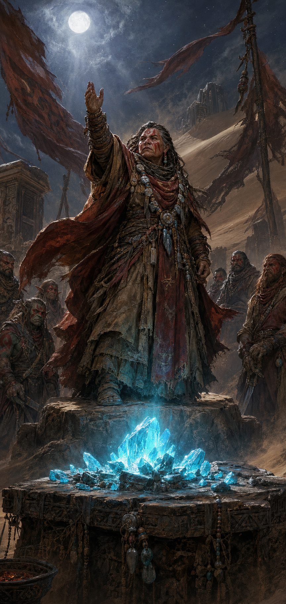

Gundrada

Histórico
Gundrada é uma anã, líder dos Colorados e principal líder de Aella. Não nasceu entre os Doreán. Órfã e cidadã de Ffin, passou a infância roubando mineradores de Simeno, até ser presa e maltratada por eles.
Ainda jovem, foi acolhida pelos Doreán por saber viver no deserto. Cresceu em Kariate Aljusur, a principal vila dos Colorados. Depois de se tornar uma das lideranças da tribo, passou a viver viajando.
Foi Gundrada quem convocou o conselho das tribos que discutiu a unificação, uma reunião que não acontecia havia décadas. A maioria votou contra. A minoria dissidente formou Aella, "Os Lutadores da Liberdade", e declarou guerra a Ffin. Os Colorados são a maior tribo da coalizão.
Segundo Ava, o fanatismo de Gundrada está ligado à necessidade de provar continuamente que é Doreán, apesar de ter nascido fora das tribos. Ava considera essa necessidade perigosa e afirma que a captura de mineradores como reféns no ataque de Aella a uma mina de Simeno só aconteceria com o aval de Gundrada.
Relacionamentos
- Colorados: Tribo que a acolheu e que hoje lidera. Sua principal vila é Kariate Aljusur.
- Aella: Principal líder da coalizão, ao lado de outras lideranças tribais.
- Theron: Comandante de campo dos Colorados que liderou o ataque a uma caravana de Simeno nas Pegadas do Gigante.
- Ava: Critica sua condução da guerra e teme que a retaliação contra Aella atinja também os Doreán que não aderiram à coalizão.
- Athroniaeth: A academia é alvo dos ataques de Aella a carregamentos e minas de Simeno.